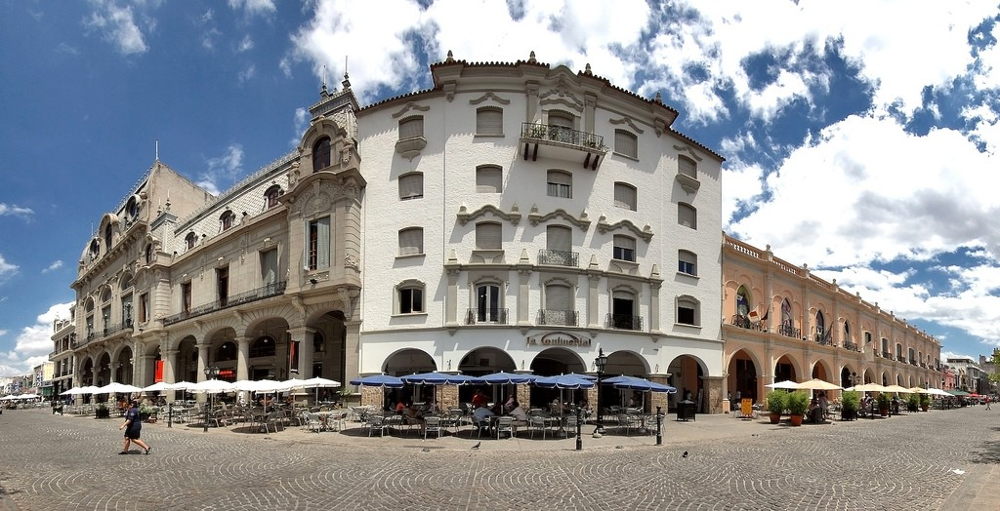

Сальта — город в Аргентине, который был основан в далеком в 1582 году и длительное время исполнял функции перевалочного пункта для многочисленных караванов, которые направлялись из Лимы в Буэнос-Айрес. Однако к сегодняшнему дню он превратился в один из наиболее посещаемых туристических городов Аргентины. Путешественников Сальта привлекает своей удивительной природой, интересными достопримечательностями и солнечной погодой. Кроме этого, в городе царит особая атмосфера праздника и веселья, а количество всевозможных праздников, концертов, фестивалей и разнообразных выставок здесь просто не сосчитать.
В Сальте погодные условия формирует горный субтропический климат, благодаря которому здесь наблюдаются резкие перепады суточных температур. Летним днем в Сальте стоит жаркая погода (+38,5 °С), а ночью температура опускается до +15 °С. Осенью становится немного прохладнее — +27 °С днем и +10 °С ночью. Зимой же по ночам бывает очень холодно (+3 º C), однако в дневное время суток воздух прогревается до +19 °C.
Среднее количество осадков в год составляет около 756 мм, причем из них более 80 % приходится на период с декабря по середину марта. Весной в городе часты пыльные бури.
Сальта является одним из самых интересных городов Аргентины и славится своей оригинальной архитектурой, а также красивейшими особняками и храмами, построенными в колониальном стиле. Среди главных достопримечательностей города в первую очередь стоит выделить статуи Девы Марии и Христа Чудотворца, которые находятся в стенах собора Сан-Франсиско. Существует поверье, что прикосновение к одной из этих статуй может излечить от любой болезни. Помимо этого, они защищают Сальту от возможных землетрясений. Другим примечательным памятником архитектуры является Городская ратуша, в которой сейчас расположен Исторический музей. Также стоит осмотреть:
Богаты на достопримечательности и окрестности города. Посетите огромный Национальный парк кактусов, на территории которого произрастают трехметровые 300-летнего возраста, а также обитают попугаи, викуньи, лисы и множество разных птиц. Не менее популярным местом является и гора Сан Бернардо, подъем на которую осуществляется по канатной дороге.
В Сальте уровень преступности достаточно низок, поэтому туристы могут чувствовать себя здесь вполне спокойно. Однако, несмотря на это, в общественных местах города всегда существует риск стать жертвой мелкого воровства или мошенничества, например, при обмене валюты. Поэтому крупные суммы наличных денег носить с собой не рекомендуется, ну а личные вещи ни в коем случае нельзя оставлять без присмотра. Кроме этого не стоит гулять в темное время по неосвещенным улицам и садиться в машины, которые не имеют опознавательных знаков такси.
Жители Аргентины говорят не на чистом испанском языке, а на местном диалекте под названием «кастижано». Поэтому, если вы владеете испанским, следует помнить, что некоторые самые обычные словосочетания здесь могут оказаться ругательством. Конечно же, туристам это прощается, однако дает повод для разнообразных шуток. А вообще, к иностранцам аргентинцы относятся с теплом и дружелюбием, поэтому отдых здесь особенно приятен.